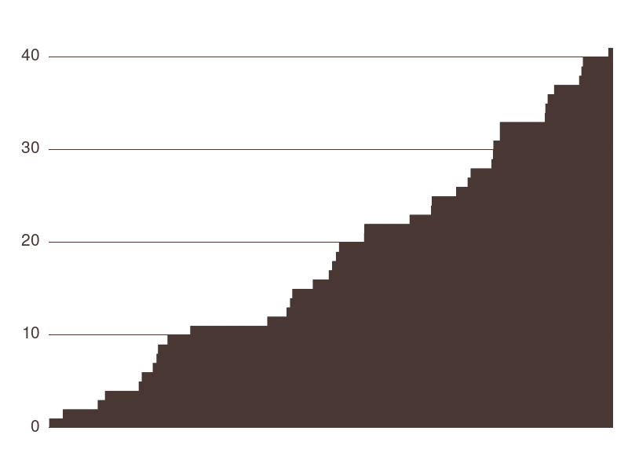

amadhj
Reverse Engineering
Reverse me and get the flag. Get it here. Service here amadhj_b76a229964d83e06b7978d0237d4d2b0.quals.shallweplayaga.me:4567
| bcrypted answer | $2a$10$svoM0Y72YKCAmIZYA/ke5OAdajAjrtMBwsRlbt8fR6mGGoaoa8RLC |
|---|---|
| observations | 285 |
| views | 3143 |
| solves | 41 |
| points | 96 |
| average solve seconds | 39357 seconds, or about 11 hours |
| stddev solve time | 26077 seconds, or about 7 hours |
Solutions Over Time
solving teams:
solved by 41 teams
| team | solved at | it took |
|---|---|---|
| Shellphish | 2016-05-21 23:15:53 UTC | 2056 seconds, or 0.57 hours |
| binja | 2016-05-21 23:51:24 UTC | 3845 seconds, or 1.07 hours |
| DEFKOR | 2016-05-22 01:23:24 UTC | 9252 seconds, or 2.57 hours |
| PPP | 2016-05-22 01:42:34 UTC | 10863 seconds, or 3.02 hours |
| b1o0p | 2016-05-22 03:11:28 UTC | 12030 seconds, or 3.34 hours |
| Eat Sleep Pwn Repeat | 2016-05-22 03:19:22 UTC | 16489 seconds, or 4.58 hours |
| Neg9 | 2016-05-22 03:48:34 UTC | 18410 seconds, or 5.11 hours |
| Samurai | 2016-05-22 03:58:05 UTC | 18980 seconds, or 5.27 hours |
| Routards | 2016-05-22 04:02:22 UTC | 18781 seconds, or 5.22 hours |
| Full Metal Cyber | 2016-05-22 04:27:42 UTC | 14329 seconds, or 3.98 hours |
| KaisHack GoN | 2016-05-22 05:27:05 UTC | 23421 seconds, or 6.51 hours |
| 0daysober | 2016-05-22 08:50:33 UTC | 34856 seconds, or 9.68 hours |
| Gallopsled | 2016-05-22 09:41:07 UTC | 36828 seconds, or 10.23 hours |
| TokyoWesterns with AST | 2016-05-22 09:50:49 UTC | 37250 seconds, or 10.35 hours |
| NeSE | 2016-05-22 09:56:56 UTC | 9715 seconds, or 2.7 hours |
| teambob | 2016-05-22 10:50:31 UTC | 43273 seconds, or 12.02 hours |
| !SpamAndHex | 2016-05-22 11:32:36 UTC | 44630 seconds, or 12.4 hours |
| Dragon Sector | 2016-05-22 11:41:55 UTC | 45115 seconds, or 12.53 hours |
| Bushwhackers | 2016-05-22 11:51:21 UTC | 45314 seconds, or 12.59 hours |
| dcua | 2016-05-22 11:59:33 UTC | 42195 seconds, or 11.72 hours |
| khack40 | 2016-05-22 13:05:29 UTC | 15860 seconds, or 4.41 hours |
| huahua | 2016-05-22 13:06:41 UTC | 35300 seconds, or 9.81 hours |
| LeaveCat | 2016-05-22 15:05:59 UTC | 57710 seconds, or 16.03 hours |
| Lamest Tea Sets | 2016-05-22 16:02:07 UTC | 54132 seconds, or 15.04 hours |
| PwnThyBytes | 2016-05-22 16:04:52 UTC | 34225 seconds, or 9.51 hours |
| TowerOfC00kies | 2016-05-22 17:08:06 UTC | 66379 seconds, or 18.44 hours |
| cyberkastike | 2016-05-22 17:38:23 UTC | 11449 seconds, or 3.18 hours |
| Team Enu | 2016-05-22 17:46:04 UTC | 67054 seconds, or 18.63 hours |
| DlcsHrs | 2016-05-22 18:41:58 UTC | 70753 seconds, or 19.65 hours |
| m1z0r3 | 2016-05-22 18:45:14 UTC | 65275 seconds, or 18.13 hours |
| 9447 | 2016-05-22 18:46:02 UTC | 71799 seconds, or 19.94 hours |
| Zeal | 2016-05-22 19:03:04 UTC | 72029 seconds, or 20.01 hours |
| ASIS | 2016-05-22 19:03:14 UTC | 12 seconds, or 0.0 hours |
| playhash | 2016-05-22 21:02:21 UTC | 79223 seconds, or 22.01 hours |
| H4x0rPsch0rr | 2016-05-22 21:03:22 UTC | 2106 seconds, or 0.58 hours |
| noTeamName | 2016-05-22 21:09:44 UTC | 80538 seconds, or 22.37 hours |
| int3pids | 2016-05-22 21:26:24 UTC | 79373 seconds, or 22.05 hours |
| CLGT-Meepwn | 2016-05-22 22:32:58 UTC | 84047 seconds, or 23.35 hours |
| LC↯BC | 2016-05-22 22:38:22 UTC | 65496 seconds, or 18.19 hours |
| 0xbadf00d | 2016-05-22 22:42:08 UTC | 50753 seconds, or 14.1 hours |
| 0ops Junior | 2016-05-22 23:49:21 UTC | 62498 seconds, or 17.36 hours |